Finder
文件
编辑
显示

↓ {{ netDown }}
↑ {{ netUp }}
100%
{{ clock }}
Mole
健康 {{ health }}
{{ m.label }}
{{ m.value }}
{{ runNote }}
占用最高的 12 个进程
CPU · 内存
{{ p.i }}
{{ p.name }}
{{ p.cpu }}
{{ p.mem }}
Mole
{{ hostLabel }}
Mole
v1.0.0
状态
{{ item.label }}
清理
{{ item.label }}
{{ item.badge }}
洞察
{{ item.label }}
CLI 已就绪
CLI v1.41.0
{{ pageTitle }}
{{ pageSub }}
--dry-run
{{ scanBtnLabel }}
{{ idleTitle }}
{{ idleBody }}
开始扫描
!
还差一个权限
系统限制了对部分文件夹的访问，Mole 只能看到一半的缓存。在「系统设置 › 隐私与安全性 › 完全磁盘访问权限」里打开 Mole 之后再试一次。
先跳过
打开系统设置
✕
这次没能扫完
有 3 个目录正在被其他程序占用，已经跳过。你可以关掉相关应用后重试，也可以先处理已经扫到的部分。
查看详情
重试
Xcode 正在使用 DerivedData · 已跳过
Docker Desktop 正在运行 · 已跳过
Photos 图库正在同步 · 已跳过
这里已经很干净了
没有找到值得清理的东西。上次清理是 3 小时前，释放了 78.3 GB。
好的
{{ scanLine }}
{{ progressW }}
{{ toggleAllLabel }}
{{ readyMeta }}
{{ selSize }}
可释放
{{ row.mark }}
{{ row.name }}
{{ row.tag }}
{{ row.meta }}
{{ row.size }}
{{ runTitle }}
{{ progressW }}
{{ s.mark }}
{{ s.label }}
{{ s.size }}
✓
{{ doneSize }}
{{ doneText }}
撤销
查看记录
再次检查
健康评分
{{ health }}
/ 100 良好
MacBook Pro · M4 Pro
32GB · macOS 15.4 · 已运行 6 天
{{ m.label }}
{{ m.value }}
{{ m.sub }}
网络
↓ {{ netDown }}
↑ {{ netUp }}
Wi-Fi · 192.168.1.100
{{ t.label }}
{{ t.value }}
电池
58°C
100%
电源供电 · 90W
423 次循环 · 健康 88%
{{ d.value }}
最大消耗
Chrome · 28.3%
占用最高的进程
{{ c.arrow }}
{{ c.label }}
{{ p.name }}
{{ p.cpu }}
{{ p.energy }}
{{ p.mem }}
✕
{{ c.label }}
{{ t.label }}
合计 {{ analyzeTotal }}
{{ d.idx }}
{{ d.name }}
{{ d.tag }}
{{ d.pct }}
{{ d.size }}
删除在这里等于「移入废纸篓」，由 Finder 执行，可随时还原。
{{ g.title }}
{{ it.label }}
{{ it.desc }}
{{ it.action }}
{{ g.title }}
{{ g.count }}
全部更新
{{ a.initial }}
{{ a.name }}
{{ a.source }}
{{ a.from }}
{{ a.to }}
忽略更新
更新
{{ a.progressW }}
{{ a.settledText }}
{{ h.time }}
{{ h.cmd }}
{{ h.detail }}
{{ h.size }}
{{ barText }}
{{ execLabel }}
{{ updTitle }}
{{ updMeta }}
·
{{ n.text }}
{{ updProgressText }}
{{ updProgressW }}
{{ autoUpdMark }}
自动下载更新
{{ updSecondary }}
{{ updPrimaryLabel }}
{{ n.title }}
{{ n.time }}
{{ n.body }}
{{ n.primaryLabel }}
忽略
帮你把 Mac 腾干净
Mole 会找出缓存、旧安装包、长期没打开的应用和它们留下的零碎文件。清掉的东西都进废纸篓，随时可以还原。
需要两个权限
都只用于本机，Mole 不联网上传任何内容。
{{ p.label }}
{{ p.tag }}
{{ p.desc }}
{{ p.action }}
要不要定期自动清理？
只清理最安全的缓存类内容，其余仍然会问过你。
{{ f.label }}
{{ f.desc }}
只在接电源时执行
避免用电池时突然变卡
{{ chargingLabel }}
{{ obSkipLabel }}
{{ obNextLabel }}
{{ confirmTitle }}
{{ confirmBody }}
{{ c.path }}
{{ c.size }}
取消
确认执行